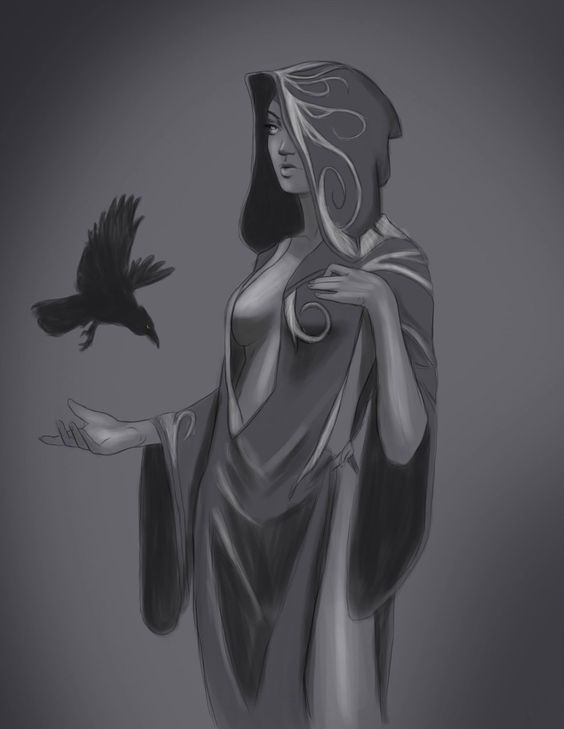
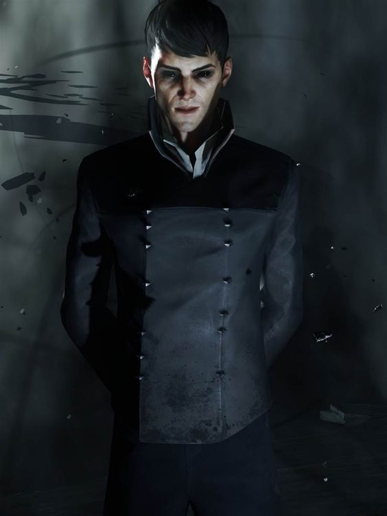

Nocturnal
A senhora da escuridao patrona daqueles que agem nas sombras, reina sobre a dimensão das sombras ela foi aprisionada dentro de um mortal durante uma magia usada pela igreja com a ajuda de outros deuses, apesar de relutar no começo passou a cuidar do garoto como sua mãe e observou ele crescer e se tornar o herege negro.
Senhor do vazio
O mestre da dimensão conhecida como vazio é um dos irmãos da escuridao, cultuado de maneira secreta por seus fiéis ele concede sua marca um símbolo de grande poder para os mortais que mais chamam sua atenção, dizem que ele deu sua benção ao herege negro. Ele busca libertar sua irmã.